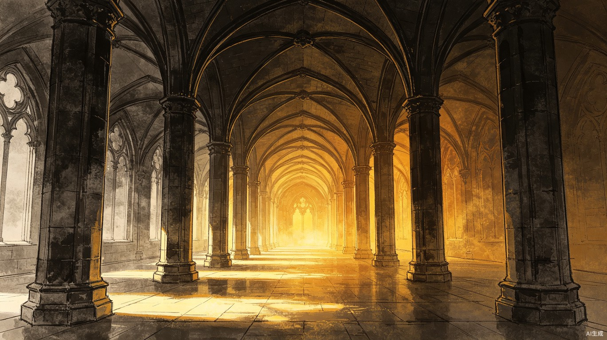

记录不是终点
用户醒来后快速说出梦境，AI 帮他整理成画面、分镜和文字，但真正的钩子是“我醒了，所以后面没了”。
这是独立产品 Demo：先把长梦境生成视觉小说，再发布到梦境广场，让真实用户在中断点或任意可生发剧情点继续写下去。当前页面里的“用户续写”是演示占位，正式产品中主要由真实用户创作。
这里是产品本体体验，只展示用户如何记录、观看和进入创作。
用户醒来后快速说出梦境，AI 帮他整理成画面、分镜和文字，但真正的钩子是“我醒了，所以后面没了”。
点击梦境后先进入视觉小说观看模式，只看图、标题和字幕，不把分支创作入口直接堆在旁边。
当用户主动点击“进入创作模式”，才出现这一幕的分叉点、续写建议和输入框。
记梦、解梦、AI 生图、视觉小说、续写故事都已经存在。这个产品的关键，是把它们拼成一个围绕“梦做到一半断掉”的共创体验。
梦境记忆在彻底醒来后会迅速消散。抢救模式提供极简录音入口：按住说话，松开自动保存，等彻底醒了再整理。
AI 把口述梦拆成场景、角色、物件和悬念点，再生成对应分镜图，组成可以逐幕点击的视觉小说。
别人看到梦的任意剧情点后，可以进入创作模式接出去。正式产品中，分支主要由真实用户创作。
口述长梦境 → AI 抽取场景 → 生成图片提示词 → 生成分镜图 → 组成视觉小说。
说明：当前 Demo 的用户续写是占位演示；真正上线后，梦境分支主要由真实用户创作，AI 只负责辅助润色、分镜和画面生成。
点击梦境后先进入沉浸式视觉小说观看。只有主动进入创作模式，才会出现分支续写入口。

点击梦境后开始播放。